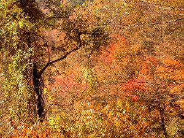
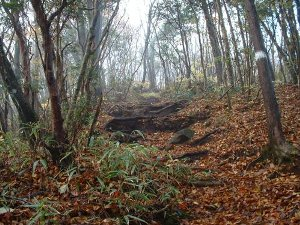
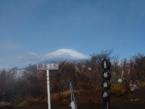
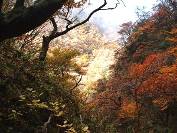

富士山麓ハイキング | ’03年11月1日 |
|---|---|
 <写真00> |  <写真01> |
| ドンよりした天気のなか朝5時半に自宅を出発。 ８時半に神社の鳥居からスタート。最初から神秘的?な風景。<写真00> 登山口付近は紅葉真っ盛り。<写真01>ただ、随所にある展望台から越前岳山頂や富士山を見ても、辺りがガスって全く見えず。 40分ほどで愛鷹山荘に到着。予約すれば宿泊でき、銀明水（湧き水）もあり、楽しそうだが私は宿泊遠慮したい。<写真02>標高を上げるとスッカリ葉を落としている。<写真03>サクサク落ち葉を踏みながら、なぜかスーパーで鳴り響いていた「阪神応援歌（六甲おろし）」を一人で歌っていた。 | |
 <写真02> |  <写真03> |
| 11時15分越前岳山頂に着いたが、辺り一面霧の中で一瞬の晴れ間に撮影するも富士山全景が見えたのはホンの数秒。<写真04>山頂は悪天にみ関わらず20人ほどいた。 ここからがマイナー登山道のため、同行者がいたら来なかったであろうルート。湿気で岩がツルンツルン滑るし、段差が大きい。呼子岳山頂からの下山は特に大変で、川原にある石の上を歩いて下山する感じ。割石峠は岩の割れ具合は芸術モノ！ 沢沿いの紅葉は抜群だった。<写真05> 14時半に下山。今コースは快晴時の展望は抜群の筈だし、静岡からも近いので、来春にリベンジ企画したい。 | |
|  <写真04> |  <写真05> |
| コメント＆写真 ｂｙ のび太 | |